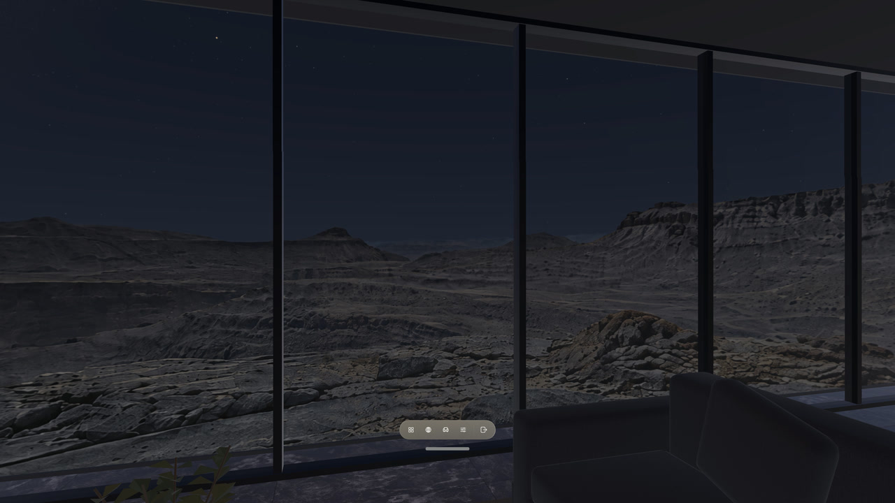
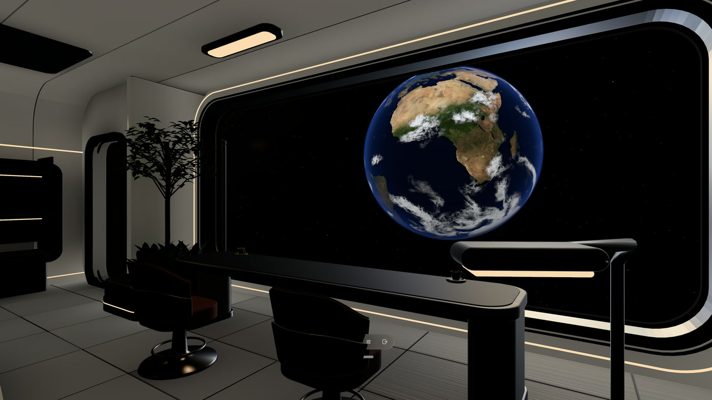
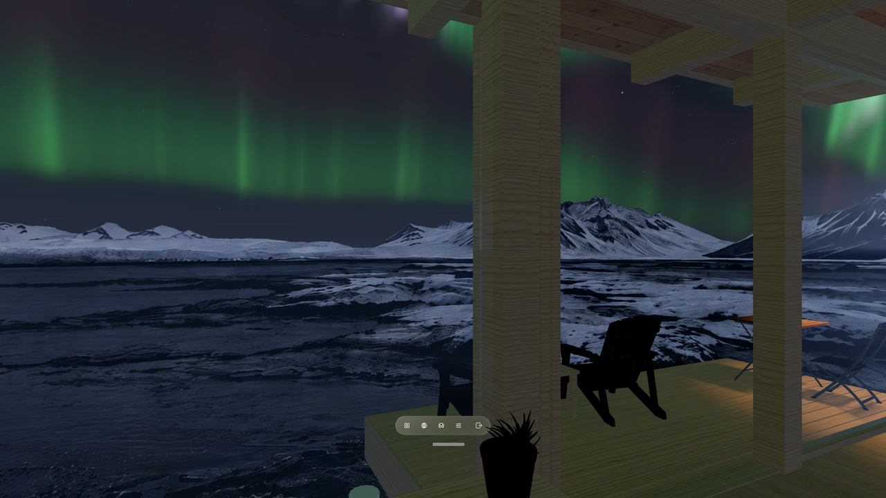
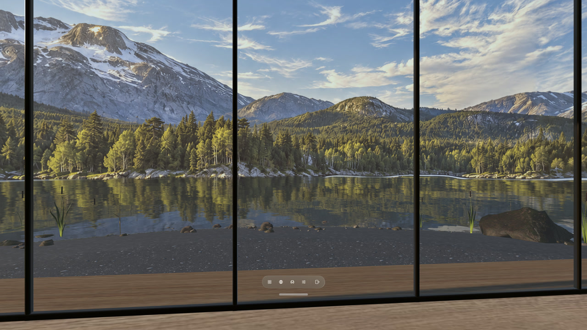
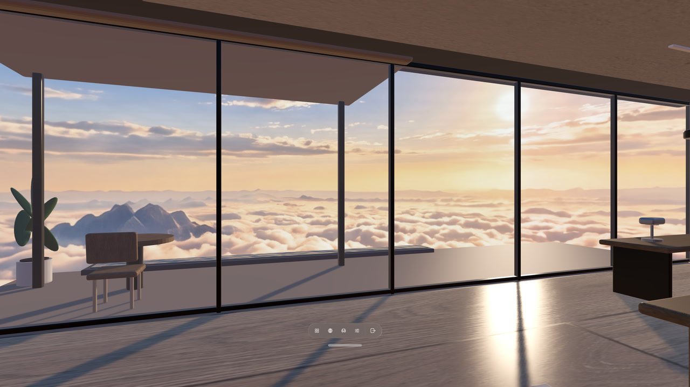

Locus 1.3.0
Your objects, and a more living View.
Real Objects brings a familiar object into your Virtual Space. Supported Views gain moving water, clouds, night skies and orbital detail, with controls to make the atmosphere your own.
Available now for Apple Vision ProAbout this update
Locus 1.3.0 is now available on the App Store. New Library content may arrive separately. Check your installed version in Settings → Help & About → About Locus before trying the new controls.
Real Objects, ready to explore
Real Objects is enabled by default in 1.3.0. If you previously switched it off, Locus keeps your choice. The Settings page now links directly to a step-by-step modeling and import guide.
Scan the exact object you use, check its real-world size, train a reference object in Create ML on your Mac, then import the .referenceobject file in Settings → Real Objects. In Desk & Surroundings, Locus reveals the real object through an opening that follows it. In Windows & Crown, it places the scanned 3D model where the real object is.
For our cup scans, KIRI Engine has given us the best results so far. This is a non-affiliate recommendation based on our own experience. A professional 3D scanner may produce a better model; either way, check the model’s size before training.
Read the modeling guide and watch the Apple Vision Pro cup demo →
More life around you
Depending on their authored data, supported Views can now bring moving water and clouds, fireflies, distant lights, a changing sun, and night skies with the Moon and aurora. Celestial and orbital Views can add layered clouds and richer surface detail.
These are capabilities a View can include, rather than effects added to every panorama. The night sky, Earth, aurora, lake water and sunlit cloud sea in our new demo show the range; availability of individual Library revisions may follow the app release.





Your atmosphere, your controls
Open Current Place → Motion to adjust the effects your current View supports. Edit View keeps motion controls together, and your choices stay with each View. Choose a calmer setting for work, then bring the atmosphere back when you want it.
The same capabilities in your own ZIP
Complete Locus Package v2 ZIPs can carry your own Views, Rooms and supported effects. The same supported data has the same rendering meaning whether it is bundled, downloaded from the Library or imported from your ZIP. Declare the capabilities and minimum app version your package needs; unsupported or malformed packages are rejected with validation.
The package authoring guide and readable format reference document the supported water, sky, celestial and orbital fields. Packages contain data and assets, with no scripts or executable extensions.
Find Places in your language
Search for Places in your preferred language. Locus keeps your original words in the search field and can translate them on your device when supported. The app and its App Store listing now include English, Simplified Chinese, Traditional Chinese, Japanese, Korean, German, French and Spanish.
More reliable installs and returns
This update also improves Library installs and recovery after immersive interruptions, so getting into a Place and returning to it are more reliable.